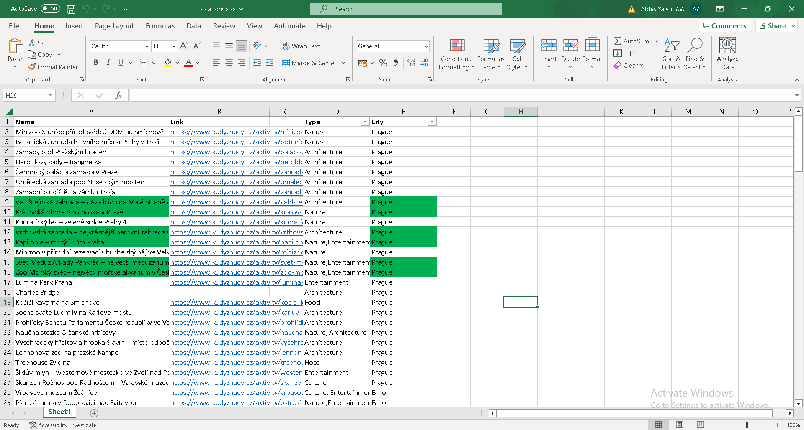

Geosights
This is a project I had in semester 1 in my studies after choosing the Media profile
In it, we made a website for traveling, where people could find interesting travel destinations in Europe, while also being free or affordable even for a student
When the project started, the first thing we had to do was make a project plan, which included what our roles were in the survey, a timeline as well our responsiblities and consiquences for breaking them
We came up with the idea by brainstorming for a site that we could all use and a topic we were interested in. After we decided to make a traveling website, we had to think of a name. I suggested it had something to do with the word "sights" in it, as well as something relating to it being about about the globe/Earth since we originally planne it to be a world map. We decided on the name "Geosights", even though later it was only focused on European countries
After we did some brainstorming, we started doing some research on what countries people were interested in and what information they would need. We did a survey as well as some interviews to gather information
For my part of the project, I was responsible for all the JavaScript which was all the functionality for the website
The main thing I was working on and struggling with for a bit was the interactive map, which I had to use an SVG map I found online and configure it. At first I started working with it in an iframe tag, but after a day or two I realized that it wouldn't work with it, so I had to copy over the large amount of code and put it in the index page itself
Besides making the interactive map, I also made templates for the location pages, country pages, a filter for the locations in the country page, a gallery and implemented google maps into the website
Another feature I added was another map for the country page, which is different than the one in the main page
Instead of having a hovering preview, this one has clickable pins, which displays locations which you can click on again to go to those pages
Overall the main challenge I had with the project was time managment. Our team finished with the design and what they wanted inside way too late and I didn't have time to do everything I wanted. I also spent way too much time researching things that didn't matter in the end (having an extensive list of locations)
For future projects, I'm going to be more pushy for my teammates to follow the timeline since in the end things won't work out when we have a deadline